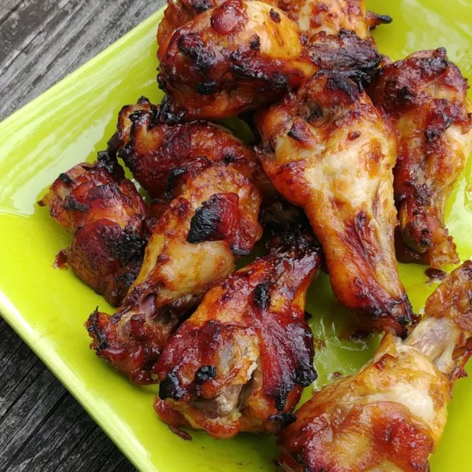

Teriyaki Chicken

Teriyaki take-out sounds yummy... But homemade might be better!
Got some extra Teriyaki Sauce? Here's a Teriyaki Chicken recipe for you!
Teriyaki chicken comes in a variety of flavors but it is mainly a mahogany-colored grilled chicken which is best eaten with white rice. But don't fret! This recipe is good even without the rice!
Ingredients
- 1 cup water
- 1 cup soy sauce*
- 1 cup white sugar*
- 1/4 cup pineapple juice
- 1/4 cup vegetable oil
- 1 tbsp minced fresh garlic
- 1 tbsp minced fresh ginger*
- 3 lbs chicken wings or drumettes
- *Optional: You can substitute these with the teriyaki sauce we've premade
Steps:
- Whisk water, soy sauce, sugar, pineapple juice, vegetable oil, garlic, and ginger together in a large glass or ceramic bowl until sugar has dissolved. Add chicken wings and toss to evenly coat. Cover the bowl with plastic wrap and marinate in the refrigerator for at least 1 hour.
- Preheat the oven to 350 degrees F (175 degrees C). Grease baking dishes and set them aside.
- Remove chicken wings from marinade; shake off excess and place the chicken wings into the prepared baking dishes. Discard the remaining marinade.
- Bake chicken wings in the preheated oven until chicken is cooked through and glaze is evenly browned, about 1 hour. An instant-read thermometer inserted into the center should read at least 165 degrees F (74 degrees C).